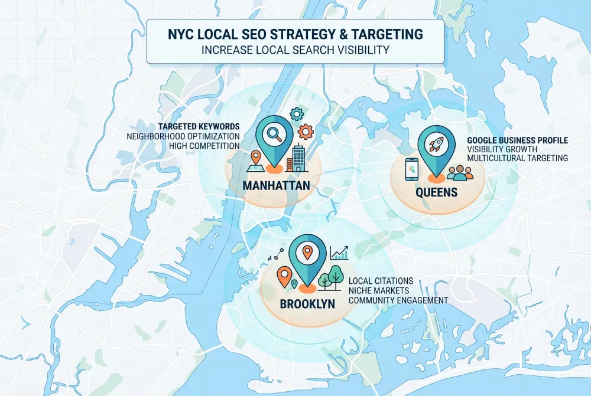
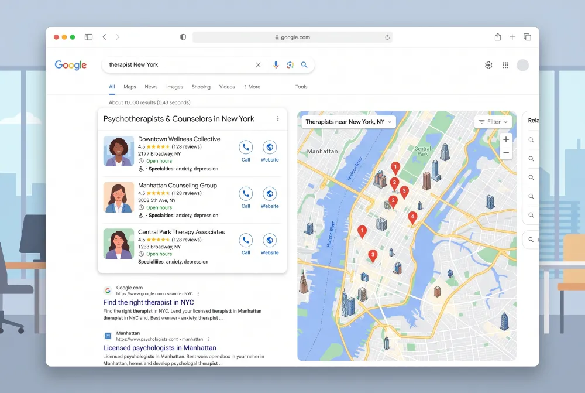

New York stands as one of the most competitive markets in the world for therapists and counselors. Thousands of professionals, hundreds of directories, and a massive population actively seeking support. This means opportunity. But it also means visibility does not happen by accident.
A therapist looking to fill their schedule in New York needs a strategy. And a major part of that strategy starts with their website.
This article explains exactly how digital presence works in New York, how patients actually search, and what fully booked therapists do differently online.
How Patients Search in New York
To understand how clients find you, you must first understand how they search. And searching in New York carries very specific traits.
First, people search locally. They don't just type "therapist." They type "therapist Upper West Side," "anxiety therapy Midtown," "CBT therapist Brooklyn." Geographic focus matters immensely because in New York, the commute dictates decisions. A patient refuses to cross the entire city for a weekly session.
Second, they search for specialties. "Anxiety therapist New York," "trauma therapy Manhattan," "EMDR therapist NYC." New Yorkers know what they want, and they search for exactly that.
Third, they check your site before reaching out. Even if they find you through a referral or stumble upon your Psychology Today profile, their next step involves reviewing your website. That site decides whether they send an email or keep looking.
Why the Competitive New York Environment Changes the Rules
In a city packed with thousands of therapists, an "okay" website fails. The visitor has options. Endless options. If your site doesn't give them a clear, immediate reason to contact you, they leave.
This means your website must do more than just "exist." It must stand out. It must answer questions rapidly. It must build trust before the visitor even considers bouncing.
New York represents a market where first impressions dictate everything. People live busy lives. They make decisions fast. If your site fails to convince them in the first few seconds, you lose the opportunity forever.
The Four Pillars of a Successful Digital Presence for NY Therapists
Pillar 1: Local SEO Targeting the Right Area
You do not want to rank for "therapist New York." That term carries massive competition and an impossibly broad scope. You want to rank for the exact terms your ideal patient uses, in the specific neighborhood where you practice.
For a therapist on the Upper West Side specializing in anxiety, the target becomes "anxiety therapist Upper West Side" or "therapy for anxiety Manhattan." These terms feature much lower competition and deliver a highly targeted audience.
You achieve this through your page titles, heading tags, body content, and overall site architecture. It doesn't happen by chance. You engineer it from the start.
Pillar 2: Design That Builds Trust in New York
New Yorkers hold exceptionally high standards. A site that looks outdated or generic fails to create the trust you need. We aren't talking about flashy animations or complex visual effects. We mean a site that looks professional, clean, and projects undeniable confidence.
Patients in New York are highly educated, experience premium services daily, and expect matching quality from every professional they hire. A site looking like it was built in 2012 sends the wrong message.
Pillar 3: Language That Speaks to the New York Patient
The New York patient fits a specific profile. They run demanding schedules, often carry a bit of skepticism, and want to know quickly if investing time in this clinical relationship makes sense. Your site's language must answer these exact needs.
Deliver clear, direct communication. Skip the exaggerations. Avoid the clinical tone that keeps the visitor at a distance. Make them feel that you understand exactly what they face and that you know precisely how to help.
Pillar 4: A Fast Path to Contact
A New York patient lacks the time to figure out how to reach you. If it takes more than two clicks to send an email or find your phone number, you lose them. Place your call to action everywhere on the site. Make it clear and unmistakable.
Neighborhood vs. City-Wide: The Right Strategy for Your SEO
One of the most common mistakes NY therapists make involves targeting too broadly. "Therapist New York" puts you up against every massive directory, large agency, and heavily established site. Your chances of ranking for that term as a solo practitioner hit zero.
Instead, target specific neighborhoods and specific specialties. "Therapist Chelsea NYC," "depression therapy Tribeca," "couples counseling Park Slope." These terms feature a fraction of the competition. And the patient typing them knows exactly what they want.
In practice, this means your site must clearly state your location. Feature the neighborhood, the zip code, and even the nearby subway stops. These act as critical SEO signals helping Google connect you with local searches.

What Google Does When Someone Searches for a Therapist in NY
Google tries to connect the patient with the most relevant and reliable professional available. To do this, it evaluates multiple factors.
It checks if your site lists the right location. It scans for the exact words the patient typed. It looks to see if other credible sites link to you. It tests if your site loads instantly. It checks if it works perfectly on mobile.
You can improve every single one of these factors. And every improvement pushes you slightly higher in the results. Over time, those slight pushes create a massive competitive advantage.
Google Business Profile: The Secret Weapon for Local Searches
The Google Business Profile acts as the digital storefront appearing for local services. It shows up on the map and on the right side of search results, featuring reviews, operating hours, and contact details.
For therapists in New York, maintaining a complete Google Business Profile remains non-negotiable. It boosts visibility for local searches. It puts you on the map. Most importantly, it shows the patient immediately that you exist, you carry authority, and you practice nearby.
The Google Business Profile does not replace your site. It works alongside it. The patient finds you on the map, clicks the link to your site, and makes their final decision there.
The "Services" Page Is Your Most Important SEO Asset
Many therapists use a generic "Services" page that lists everything they treat in bullet points. This wastes a massive SEO opportunity.
Every specialty deserves its own dedicated page. One page for anxiety. One for depression. One for couples therapy. Each page targets specific keywords, details exactly how you treat that condition, and speaks directly to the patient searching for that exact help.
This structure doesn't just boost SEO. It helps the patient feel they found the exact professional tailored to their specific struggle.
Mobile: Why It Matters Even More in New York
In New York, people constantly move. On the subway, on the train, walking the streets. Over 70% of therapy searches happen on a mobile device.
This means your site must perform flawlessly on mobile. It must load fast. It must remain readable without zooming. Buttons must be large enough to tap easily. The phone number must trigger a call instantly.
If someone opens your site on their phone and has to pinch to read your bio or hunt for your email, you lose them. In New York, patience for a terrible mobile experience sits at absolute zero.
Testimonials and Reviews: How They Play in New York
Reviews carry heavy weight in New York. Word of mouth rules this market, but online evaluations matter just as much.
For therapists, collecting testimonials requires more delicacy than other professions. Many patients refuse to publicly review their therapist. We understand and deeply respect that clinical boundary.
But solutions exist. Use anonymous testimonials on your site. Frame patient feedback without revealing identities. Encourage Google Business Profile reviews from colleagues or patients comfortable leaving them.
Even a handful of reviews makes a massive difference. They prove real people chose you and walked away satisfied.
Load Speed: The Ignored Factor
Many therapist websites load terribly slow. Heavy images, outdated template platforms, unoptimized code. In New York, where people search using subway 4G connections, a slow site means they bounce before it even finishes loading.
Google also actively penalizes slow sites in its search rankings. This creates a double loss: lower search visibility and visitors leaving before seeing your work.
A properly built site, coded cleanly rather than relying on bloated DIY platforms, loads in a fraction of a second. That technical detail changes your bottom line.

Page One of Google vs. Psychology Today
Your ultimate goal is landing on the first page of Google for the terms your prospective patients search. That takes time. But the clock starts today.
Every month you delay launching a site is a month you lose in this race. Google needs time to "trust" a domain. It needs to see you exist, that you update content, and that people visit.
The therapist who builds this presence today shows up on page 2 or 3 of Google in six months. In a year, they hit page one for targeted keywords. That ranking works for you 24/7 without ever charging you for clicks.
Getting Started: The First Moves
If you are starting from zero, the roadmap remains clear.
First, build a site that properly represents your practice. Avoid cheap internet templates. Launch something that looks undeniably professional and matches how you want patients to perceive you.
Second, ensure your site targets the right keywords for your neighborhood and specialty. This establishes your SEO foundation.
Third, create or optimize your Google Business Profile. Verify your address, set your hours, and link back directly to your site.
Fourth, evaluate if Psychology Today still fits your strategy. If your site lacks traction initially, use Psychology Today as a bridge. Once your site dominates local SEO, it becomes your primary acquisition channel.
Fifth, review your data every few months. How many people visit? How many contact you? Where do they come from? Data tells you exactly what works and what needs fixing.
A New York Therapist Without a Site in 2026
Imagine two therapists. The first carries ten years of experience, specializes in anxiety, and runs a beautiful office in Midtown. They lack a website. The second sits in their third year of practice, holds less experience, but runs a highly optimized site ranking for "anxiety therapist Midtown."
Who gets the new inquiry from the patient searching at 11 PM on a Tuesday? The one who shows up on Google.
This isn't unfair. It is modern reality. And the solution remains simple: show up exactly where they search.
Want Patients in New York to Find You?
We design websites for therapists that rank locally and convert visitors into booked patients. Start with a conversation.
Let's Talk